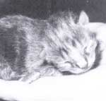

How to help your animals birth healthy youngsters.
Few events signify spring more beautifully than the births of baby animals. Since we're entering the season when many species bear young-and when all animal owners must face the task of helping as best they can-here are some tips to ease you through those joyful, but often nerve-racking, birth days.
Ideally, you've already taken several steps to prepare your expectant critters for motherhood. Although it's beyond the scope of this article to list each individual specie s' needs, it's important that you at least have had your mothers-to-be vaccinated, wormed, and treated for external parasites no less than 30 days before the expected birth date. (You've kept accurate records so you know when that date is, right?)
As the day nears, prepare a warm, dry, draft-free, and absolutely clean birthing place. A few days before the blessed event, you may want to clip away any excess hair around the vulva and teats and scrub the areas well. (Such clipping is especially important for ewes and pigs, but not necessary for rabbits or cats.)
Put your midwifery supplies someplace where you'll be able to find them quickly. Have several clean drying towels handy (old bath towels or diapers work fine). A small, wide-mouthed bottle filled with iodine is ideal for sanitizing a newborn's dangling umbilical cord. With the cord immersed in the iodine, simply hold the bottle tightly against the little one's belly and turn the bottle and baby over. (This isn't required for rabbits.)
Most births proceed without a hitch and present no problems. It's always a good idea, though, to have your veterinarian's phone number handy-both for regular hours and after hours. And you might want to read MOTHER No. 85's article "Livestock Parturition" for information on handling troublesome deliveries yourself-just in case.
The first few hours of any youngster's life are the most critical. The two essential keys to helping a babe through these hours are to make certain it gets its life-giving dose of colostrum and to be sure it is warm and dry.
Colostrum is a special kind of milk that the mother produces during the first few days of baby's life; it provides important antibodies against diseases and serves as an exceedingly rich source of nutrients. Colostrum can be absorbed by a newborn's gut for only a few hours after birth... so it's essential that baby gets to nurse right away.
Animals are born with a special kind of fat, called brown fat, that acts as a source of fuel for generating heat. The problem is, there usually isn't much of a brown fat supply, and in really frigid climes this heat generator may be totally depleted in a matter of hours. So it's vital that you do everything you can to keep newborns warm and dry.
A brisk rubdown with a towel immediately after birth will warm the baby, stimulate its breathing, and dry it off. (Of course, you have to be there when all the action occurs -that's why it's so important to keep a close eye on expectant mothers.) After baby is completely dry, make certain that the bedding, too, is dry and clean, and be sure there are no drafts.
Many animal owners use a heat lamp for helping keep little ones toasty warm. That's OK, but there are some problems you should consider.
For most critters the ideal beginning temperature under a heat lamp-measured next to the bedding-is 80° to 85°F. (According to standard procedure, you then decrease this five to 10 degrees each week until you reach ambient temperature.) Unfortunately, that's also the ideal temperature for growing bad guy bacteria. Many goat and sheep breeders have found that their lamb and kid crops are healthier without the lamp-so long as there is plenty of bedding and a companion or two to cuddle up to. The bottom line is, if you're going to use a heat lamp, you'll need to clean up the bedding underneath it at least four or five times a day.
Another problem with heat lamps is that they are a fire hazard. Vermin seem to relish the taste of exposed electrical cord, creating a volatile situation that's definitely not conducive to your animals' (or your barn's) good health.
The following are some special considerations for the birth days of individual species.
Reasonably enough, expectant canines and felines tend to choose the most comfortable spot around for having their litters. Unfortunately, that often means the family sofa, a bed, or under the porch (where you can't help if necessary). To avoid this situation, try to get momma-to-be accustomed to the place you'd like her to use as a delivery room. Keep her confined to that area, most of the time anyway, for about a week before her due date.
Born naked and helpless, the young rabbit needs a home safe from the elements. Mother rabbit provides an insulating bed of fur that she has pulled out from under her chin. Your job is to provide a nest box that measures 18 to 22 inches long by 12 inches wide by 12 inches high in the back. (See "Ten Commandments for Raising Healthy Rabbits," issue 61.) Put the box in the hutch three days before kindling-any earlier and the doe tends to use it as a bathroom; later can be disastrous, because the mother might not be sufficiently accustomed to the nest box to use it, and babies born outside the box may not stay warm enough to survive.
In really frigid weather, mother's fur nest may not be adequate. You can help by lining the inside walls of the nest box with plastic foam (supermarket meat trays work well) and making sure that the nest box and the hutch are well out of the wind.
Chances are you won't be able to see if the bunnies get their colostrum. Doe rabbits feed their young for only a few minutes during a
24-hour period, and this is done at night, when no one is around. Check the bunnies in two or three days to see that they're potbellied healthy.
Ewes tend to wander off from their lambs right after they give birth. To discourage this wanderlust, pen momma a few days before she's due in an enclosure that's four feet on a side, and keep her there with her offspring until she accepts them as hers.
Feeding colostrum to goat kids may present another kind of problem. Recent evidence indicates that an insidious disease, caprine arthritis and encephalitis (CAE), may be passed in the colostrum. Some goat owners pasteurize their does' colostrum before feeding the kids-check with your veterinarian for current info on this problem.
Since they are nearly hairless, piglets need a warmed environment, beginning at about 85°F. On the other hand, mother pig is comfortable in a room that's about 50° to 60°F. If she's hot and uncomfortable, she'll be continually up and down-and each trip is a potential piglet smasher. The key to keeping mother from being a bone crusher is to have her farrow in a farrowing crate-an enclosure measuring about three feet wide by seven feet long-that allows the piglets to scurry out and away from her. (See "How to Breed Healthy Pigs" in issue 64.) To be sure the wee ones stay warm when they're separated from mom, provide a heat lamp or a floor area that's been prewarmed with a heating pad.
The advice that I give most often to expectant animal owners, and that undoubtedly is the hardest to follow, is stay calm. Animals know when you're nervous and they pick up on it. I've seen a momma dog start labor and then stop-for two days-when she sensed her owner's apprehension. So whatever you do, try to keep your composure.
|
The arrival of an infant pet or livestock animal is a magic moment. And you can play a part. |
 |
|